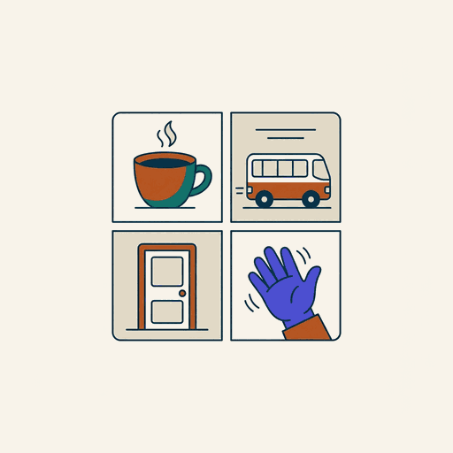
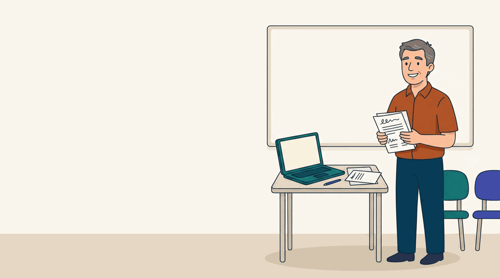

Cuaderno
El sistema, en una página
Los tokens, los componentes y las reglas de imagen que usan las siete pantallas de este demo. El detalle completo está en el README.
1 · Papel y tinta
la base, heredada del landing--sand · #FBF8F4Fondo en modo Aprendo
--cool · #F2F5F7Fondo en modo Enseño
--navy · #00496APrimario y acento de Enseño
--terracotta · #B8541FAcento de Aprendo
2 · Colores de familia
ya existen enapp.css; aquí suben a la navegación
--fam-quiz · #4F46E5hoy
--mf-quiz--fam-roleplay · #0F766Ehoy
--mf-teal--fam-guia · #1F6F8Bhoy
--mf-practice--fam-escena · #B8541Fhoy
--mf-choice--fam-charla · #6C4B2Choy
--mf-dialogue3 · Tipografía
Literata para títulos, sistema para interfazSigue donde lo dejaste
Lo que te dejó Fabiola
Ayer te quedaste a mitad de Past simple — Worksheet 7B. Son 4 bloques, unos 6 minutos.
Yesterday I to the pharmacy.
4 · Los dos modos
un atributo, cinco diferenciasModo Aprendo
Tu práctica de hoy
- Fondo papel cálido
- Acento terracota
- Títulos en serif (Literata)
- Radios amplios (16 px) e ilustración de portada
- Voz en segunda persona: «tú practicas»
Modo Enseño
Panel de clase
- Fondo papel frío
- Acento azul marino
- Títulos en sans
- Radios cerrados (12 px), sin ilustración, tablas
- Voz sobre el grupo: «ellos entregaron»
Se implementa con data-mode en <html>. Ese atributo redefine seis variables
(--mode, --mode-deep, --mode-tint, --app-bg,
--card-radius, --heading-font). Ningún componente conoce los modos: solo leen variables.
5 · Componentes nuevos
todo lo demás sigue siendo Bootstrap.rcard — tarjeta de recurso
Pedir cita en la clínica
.acard — acción de crear
.stat · .chip · .bar
6 · Cuándo usar imagen y cuándo no
el árbol de decisión¿Enseña el producto? → mockup en HTML, nunca captura ni imagen.
No se queda obsoleto, se traduce solo, pesa cero y es honesto sobre que es un ejemplo. Es lo que ya hace el landing.
¿Identifica un recurso? → portada dibujada en CSS: tinte de familia + trama de puntos + glifo.
Gratis, infinita, nunca equivocada, reconocible entre veinte. No se generan imágenes por recurso.
¿Da tono a una página o llena un vacío? → ilustración (hero 16:9 o spot 1:1).
Generada con Gemini vía OpenRouter, paleta cerrada, sin texto legible, plana. La receta exacta está en el README.

¿Es contenido de aprendizaje? → escena de la biblioteca existente, sin cambios.
Las cuatro viñetas ya tienen su propia guía en design/illustration-style-guide.md. Este sistema no la toca.
7 · Las ilustraciones de este demo
9 imágenes · 12–68 KB cada una

